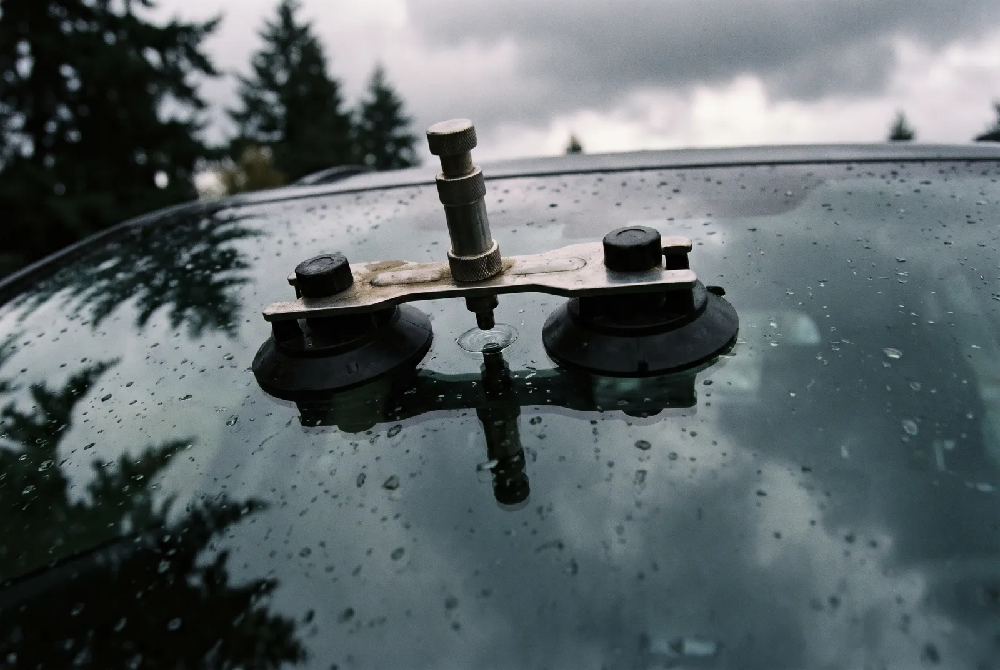
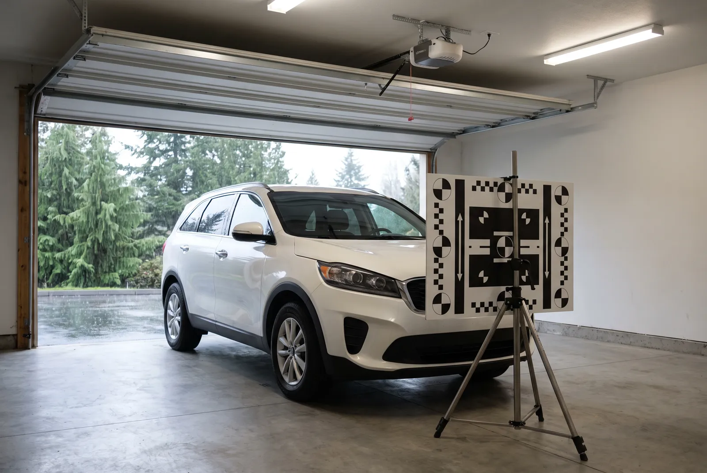

Windshield Replacement in Auburn
Windshield replacement in Auburn is the fix for a crack longer than about six inches, a break at the edge of the glass, or damage in the driver’s view. It suits anyone whose windshield can no longer be safely repaired.
Left alone, a long crack keeps running with every frosty morning, pothole and blast of the defroster. It also scatters headlight glare on wet roads after dark, which makes a rainy drive home on SR 167 harder than it needs to be.
Call us today for windshield replacement in Auburn. Read more about windshield replacement.

Windshield Chip Repair in Auburn
Windshield chip repair in Auburn fills a fresh rock chip with clear resin so it stops spreading and gets much harder to see. It works for chips smaller than a quarter that sit away from the edges.
Ignored, a chip fills with rainwater, and when that water freezes overnight it pries the break wider. One cold snap and a hot defroster can turn it into a crack that needs a whole new windshield.
Call us today for windshield chip repair in Auburn. Read more about windshield chip repair.

Car Window Replacement in Auburn
Car window replacement in Auburn covers door glass and the small quarter windows broken by a break-in, an accident or a failed window regulator. Side glass is tempered, so it shatters into small pieces that have to be vacuumed out of the door and the cabin.
Until it is replaced, a broken window leaves the car easy to get into and lets the rain soak the seats and carpet. Plastic and tape rarely hold up at highway speed.
Call us today for car window replacement in Auburn. Read more about car window replacement.

Rear Windshield Replacement in Auburn
Rear windshield replacement in Auburn puts new back glass on sedans, hatchbacks, SUVs and pickups. Most rear glass carries defroster lines, and many cars run the radio antenna or a rear wiper through it, so those get reconnected during the job.
With the back glass gone, the cabin is open to theft and rain, and broken pieces keep falling into the trunk or cargo area. You also lose the rear defroster, which you lean on all winter here.
Call us today for rear windshield replacement in Auburn. Read more about rear windshield replacement.

ADAS Camera Calibration in Auburn
ADAS camera calibration in Auburn re-aims the forward camera behind the rearview mirror after a windshield is replaced. Most newer vehicles with lane-keep assist, automatic emergency braking or adaptive cruise control need it.
Skipped, the camera can read the lane a few degrees off. Warning lights may come on, or the safety systems may brake or steer at the wrong moment.
Call us today for ADAS camera calibration in Auburn. Read more about ADAS camera calibration.
